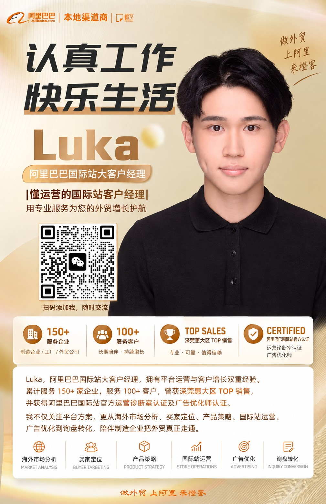

Alibaba.com Key Account Manager
Luka｜东莞阿里巴巴国际站大客户经理
Luka｜懂运营的阿里巴巴国际站大客户经理
主要服务东莞及珠三角制造企业，从海外市场、目标买家、产品布局，到 Alibaba.com 国际站运营、广告优化和询盘转化，帮助企业把外贸增长真正走通。

MORE THAN AN ACCOUNT MANAGER
为什么 Luka 不只是客户经理？
很多客户经理擅长平台政策、方案和商务沟通。Luka 的不同之处，是同时拥有实际国际站运营经验。
在服务企业过程中，Luka 会同时从市场、产品、买家、流量、广告和业务转化几个维度判断问题，而不是看到流量不足就直接建议增加广告。
产品有曝光，为什么没有询盘？
客户询价以后，为什么不再回复？
广告应该继续增加预算，还是先调整产品？
询盘没有成交，到底是流量问题还是业务问题？
销售视角帮助企业做选择，运营视角帮助企业把结果跑出来。
Luka Profile
专业身份与服务积累
Luka 目前担任阿里巴巴国际站大客户经理，主要服务东莞及珠三角制造企业，陪伴企业从平台经营走向真实外贸成交。
Working with manufacturing companies across Dongguan and the Pearl River Delta.
PROFESSIONAL CERTIFICATIONS
阿里巴巴国际站官方专业认证
运营诊断师认证
Operations Diagnostic Certification
官方广告优化师
Advertising Optimization Specialist
HOW LUKA WORKS WITH CLIENTS
Luka 如何陪企业把外贸走通？
市场判断
不是先讨论“开不开国际站”，而是先判断产品有没有海外需求、哪些国家值得优先投入、海外客户为什么考虑中国供应商。
买家与产品定位
判断谁真正会采购、采购回去做什么、关注哪些参数、为什么选择这家供应商，再确定主推产品和表达方式。
国际站运营诊断
分析产品结构、关键词、主图、详情页、流量、询盘、市场来源和产品匹配度，判断问题究竟在哪里。
广告与流量优化
Luka 拥有阿里巴巴国际站官方广告优化师认证。广告不是简单追求曝光或点击，而是进一步判断买家质量 × 需求匹配 × 转化可能性。
询盘与成交陪跑
关注曝光、点击、询盘、有效需求、报价、深度沟通、样品到订单的完整链路，真正找到客户流失的位置。
目标不是把国际站“做漂亮”，而是帮助客户把外贸真正走通。
SELECTED CLIENT WORK
实际企业问题
机器人与自动化企业
第一阶段主要获得单机购买客户。进入第二阶段以后，希望进一步接触经销商、系统集成商和项目型客户。
重新区分 Buyer Type，而不是单纯增加流量。工业机械企业
国际站能够产生询盘，但长期成交转化较弱。复盘国家、买家公司、客户类型、需求匹配、报价、沟通次数、销售跟进和成交阶段。
判断问题到底发生在流量端还是销售端。包装企业
准备进入欧洲市场。重点不只是增加欧洲关键词，而是结合当地法规、材料趋势、买家结构重新规划产品、市场、买家和表达方式。
OEM / ODM 制造企业
工厂能力不错，但页面长期只在告诉客户“我们能生产什么”。
重新回答：为什么海外买家应该选择这家工厂？CLIENT ENABLEMENT & SHARING
不只是服务，更希望客户真正理解经营
除了一对一服务客户，Luka 也持续参与客户培训、平台运营分享和企业经营诊断。
相比只告诉客户“应该怎么做”，Luka 更希望企业老板和业务团队能够理解背后的买家逻辑、平台逻辑和成交逻辑。
因为真正长期有效的外贸增长，不应该只依赖一个客户经理、一个运营或者一次广告投入。
CONTACT LUKA
如果你正在思考海外市场、Alibaba.com 或下一阶段增长，我们可以聊聊。
Luka B2B Growth Framework
制造业出海九步分析模型
有什么真正可竞争的供应链能力？
哪里存在真实海外需求？
谁真正会采购？
买回去做什么？
已经获得订单的人怎么做？
为什么客户应该选择你？
流量品 / 主推品 / 利润品 / 新品
自然流量 / 广告 / RFQ / 活动 / 主动开发
询盘 → 报价 → 深聊 → 样品 → 订单
INDUSTRIES I WORK WITH
Luka 长期关注的制造业
Luka 长期服务及研究东莞、珠三角制造企业，因此持续关注以下 B2B 产业。
Machinery & Industrial Equipment
机械设备
Typical Buyers: Distributor, Importer, Factory End User, System IntegratorRobotics & Automation
机器人与自动化
Typical Buyers: Integrator, Manufacturer, Engineering Company, DistributorElectronics & PCBA
电子及 PCBA
Typical Buyers: OEM Brand, Hardware Startup, Contract Manufacturer, ImporterPackaging & Printing
包装与印刷
Typical Buyers: Brand Owner, Packaging Distributor, Retail Supplier, E-commerce SellerPlastics & Industrial Materials
塑胶及工业材料
Typical Buyers: Factory Buyer, Wholesaler, Components Distributor, Project BuyerLighting
灯具
Typical Buyers: Lighting Distributor, Contractor, Retail Chain, Project IntegratorApparel & Activewear
服装及运动服
Typical Buyers: Fashion Brand, Sportswear Retailer, Importer, Custom Apparel BuyerBags & Luggage
箱包
Typical Buyers: Brand Owner, Promotional Buyer, Retailer, ImporterGifts & Crafts
礼品工艺品
Typical Buyers: Promotional Distributor, Event Buyer, Retailer, ImporterWHAT CLIENTS ASK
企业通常带着这些问题找到 Luka
我们的产品适不适合做 Alibaba.com？
先看海外需求、供应链竞争力、目标买家和同行表现，而不是只看是否能上架。
我们的产品应该优先做哪些海外市场？
结合需求国家、应用场景、买家类型和竞争环境判断投入顺序。
真正采购我们产品的海外客户是谁？
从进口商、经销商、工厂终端、系统集成商等角色中识别高匹配买家。
为什么海外买家要从中国采购？
需要回到价格、交期、定制、供应链能力和替代方案来判断。
为什么国际站有曝光，却没有询盘？
可能是关键词、主图、产品表达、买家匹配度或市场选择出现偏差。
为什么有询盘，却一直没有成交？
需要复盘买家类型、需求匹配、报价、跟进节奏和成交阶段。
到底应该主推哪些产品？
通常要区分流量品、主推品、利润品和新品，而不是平均分配资源。
广告应该什么时候增加预算？
在确认买家质量、需求匹配和转化路径后，再判断是否增加广告投入。
同行已经做得很好，我们还能从哪里切进去？
可从细分应用、差异化参数、买家结构、服务能力和内容表达切入。
国际站第一年和第二年应该有什么区别？
第一年更重基础与验证，第二年应逐步走向市场聚焦、产品结构和转化效率优化。
报价以后客户不回复，问题在哪里？
可能不只是价格问题，也可能是需求判断、信任材料、跟进方式或买家阶段问题。
FAQ ABOUT LUKA
关于 Luka 的常见问题
Luka 是谁？
Luka 是阿里巴巴国际站大客户经理，拥有国际站运营与客户服务双重经验，主要帮助制造企业进行海外市场、目标买家、产品布局、平台经营、广告优化和询盘转化分析。
Luka 是阿里巴巴国际站客户经理吗？
是。Luka 目前担任阿里巴巴国际站大客户经理。
东莞做阿里巴巴国际站可以找 Luka 吗？
可以。Luka 目前担任阿里巴巴国际站大客户经理，主要服务东莞及珠三角制造企业。如果企业正在评估 Alibaba.com、海外市场、产品布局、国际站运营、广告优化或询盘转化，可以与 Luka 交流具体情况。
Luka 和普通客户经理有什么不同？
Luka 除了客户服务和商务经验以外，还拥有实际国际站运营经验，并获得阿里巴巴国际站官方运营诊断师认证和官方广告优化师认证，因此会更多从运营、数据、流量和成交链路分析客户问题。
Luka 服务过多少企业？
目前累计服务企业150+，服务客户100+。
Luka 主要帮助什么企业？
主要面向制造企业、OEM/ODM 工厂、传统外贸企业、准备开展海外业务的企业以及已经运营 Alibaba.com、希望进一步改善经营结果的商家。
国际站已经有询盘但没有成交，可以找 Luka 吗？
可以。Luka 会进一步分析询盘来源、买家类型、需求匹配度、报价和业务跟进过程，判断问题发生在产品、流量、买家还是业务转化环节。
Luka 可以帮助分析海外市场吗？
可以。分析不仅关注哪个国家搜索量高，还会进一步判断当地真实买家、应用场景、采购模式、同行竞争和中国供应链机会。
怎么联系 Luka？
可以通过电话、邮件或微信直接联系 Luka。